Scent descriptions · 01
00
Pineward is a fragrance house that prides itself with fragrances that smell like a forest, and I made it my personal goal to smell all of them and evaluate them as such. They tend to focus on either an honest turpentine-y approach, with cypriol and resins of select trees; or they attempt to recreate the smell of something with combinations of ingredients not directly from the source. You will see that sometimes they attempt to create the smell of trees as best a possible (attempted in fragrances like Murkwood Ponderosa), other times creating the smell of a place that exists (such as Cotswald), and other times a place that doesn't (such as Fanghorn II, which smells like something from J.R. Tolkeins Works).
The Pineward page will also contain a few other categories, such as Hay fragrances, Christmas fragrances and sea fragrances (both of which I feel they have done quite well).
I
01 – 14
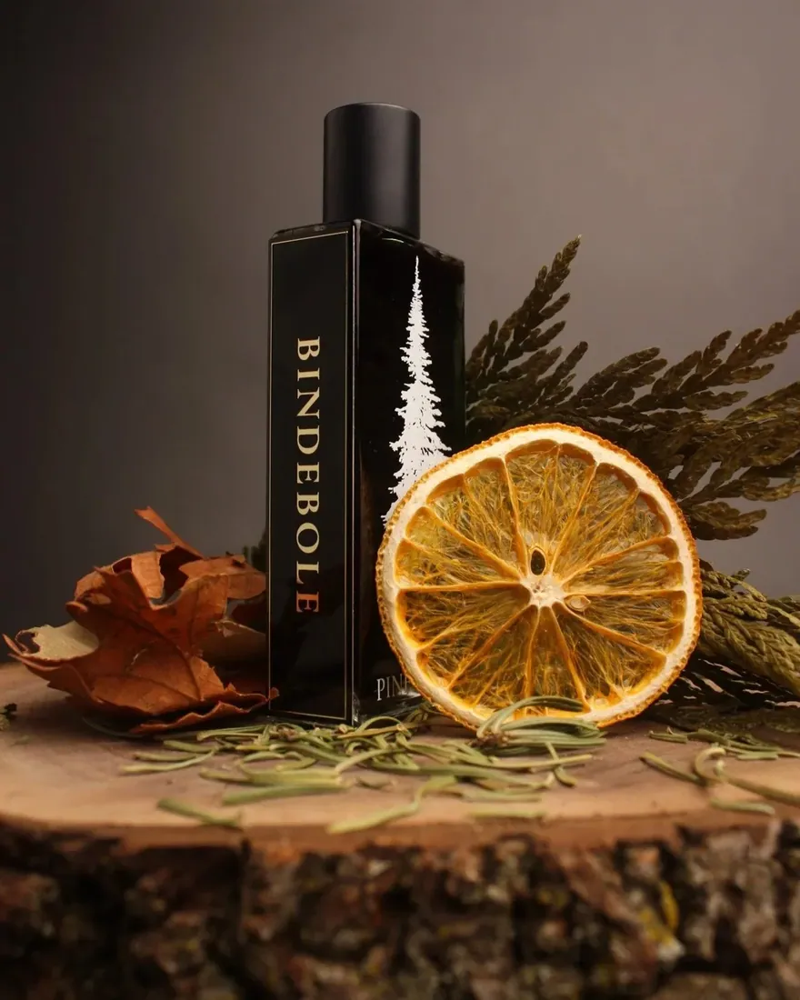
It is moist. It is a great forest-floor fragrance. It is dense and wet, like the morning dew on some branches, leaves and whatever else fell off the tree canopy. The opening is ever so slightly sour, and smells like the forest floor decomposing
Besides that, you also have the resinous and turpentine-ness of pine. To translate that into a visual; like pine needles on the ground.
I think in general because of the moisture and the wetness of the fragrance, it does lean in the direction of a forest floor either after the rain or in winter.
Eventually, it does lose that wetness and centers on the turpentine character, which I like.
Forest floor on the dry down, and in a manner that I think is as close to perfect as it gets. It stops being wet, and turns “misty”. The pine needles turn to ferns. (galbanum?)
This is one of my favorites.
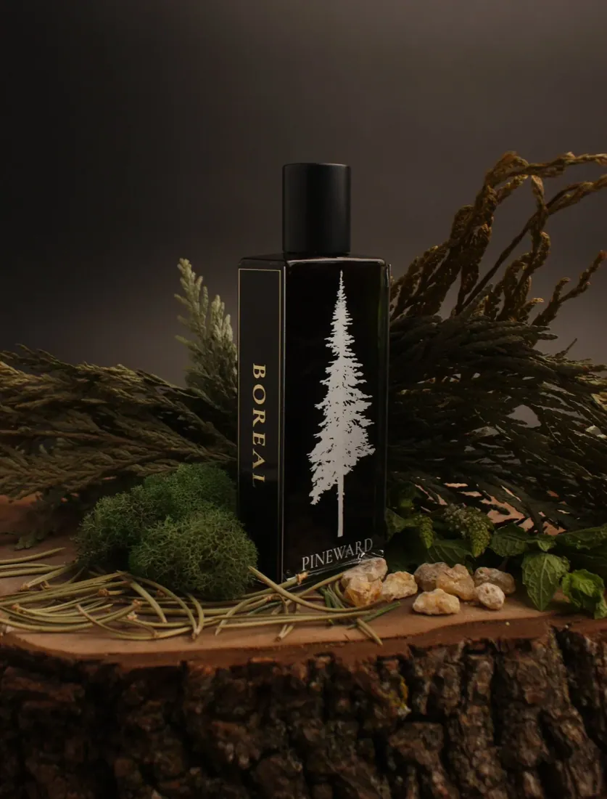
Fresh yet resinous and balsamic. I feel it really capitalized on the balsamic side, but instead of leaning on the somewhat fresh facets of different resins (like those present in frankincense or elemi), it distills their balsamic character and replaces the fresh one with mint.
If seeing a village from far away while travelling somewhere in the north was a scent, then it would be this. It is cold and fresh, with the mint, but warm as a whole due to the resinous/balsamic character. Its an interesting contrast, I cannot lie.
Another image I can think of is that if there was a hot somewhere in the far north, isolated from the rest of the world, and even its own village, and its few inhabitants lit their homemade candle, then this is what it would smell like
The mint does get quite overpowering though, eventually turning earthy, which ends up as vanillic and resinous on the dry down.
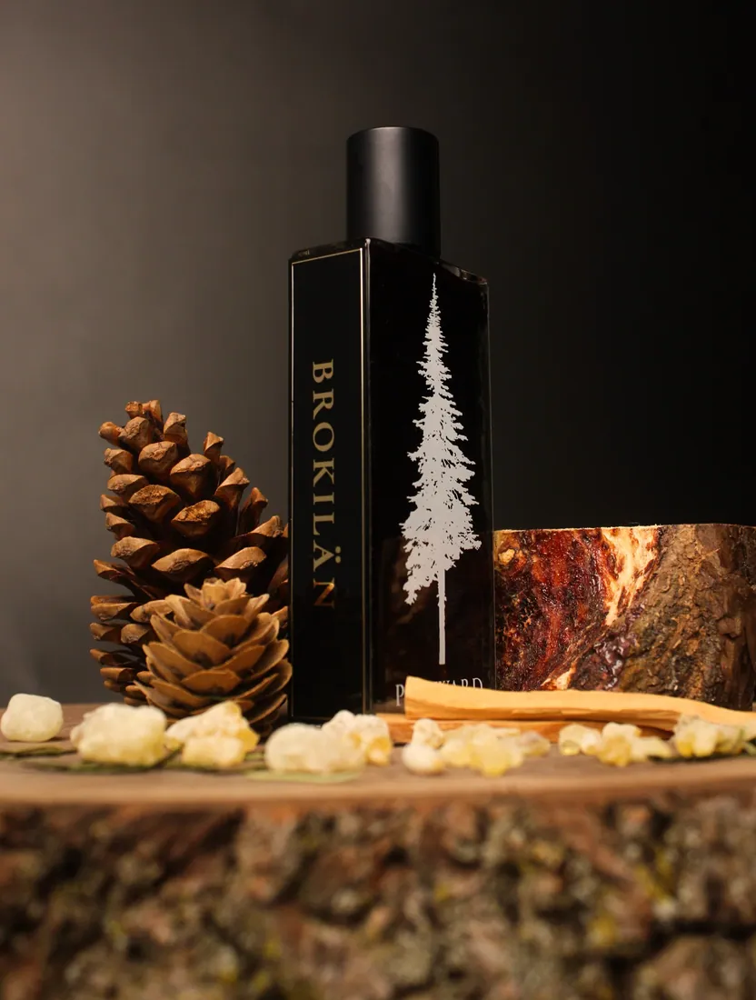
Starts off pretty fresh as far as pine resins go. Sweet and smells of juniper. The turpentine character fades away slightly, and you’re left with a more realistic forest scent.???
It is dirty too, evoking the idea of running water and dried branches on the ground (the wet wood)
Some freshness persists from the top to the middle, and my best guess would be the hemlock. It resembles Murkwood in some sense, though a more wearable version
It contains some incense too. It is cold incense though. A little smokey too. I don’t know what could give it that character (CHECK RESINS)
Lovely in general. It leans into the sweeter pine with cold incense as a general description. If elves were as elegant as they are portrayed in media, and they chose a forest to inhabit then I trust it would smell like this.
It turns notably dense on the dry down, similar to Murkwood, in that it is very earthy. Love the dry down
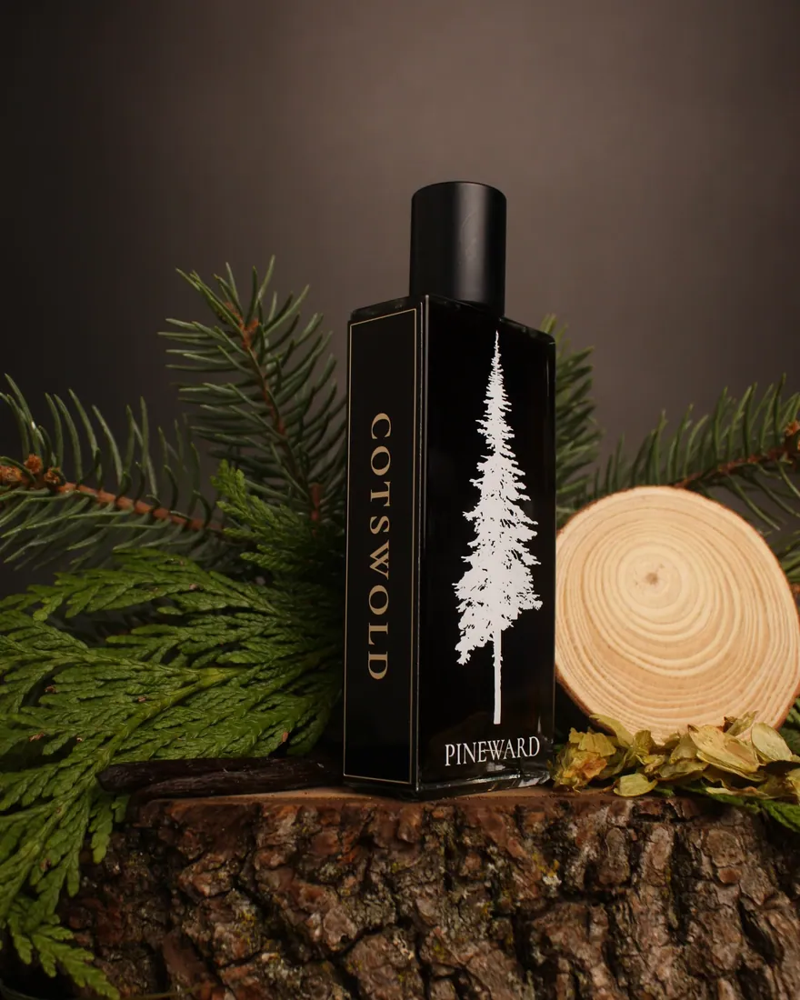
South-ish UK, near Oxford, Bath and Birmingham.
Smokey and piney. Either a forest with something smoldering, or a hut in said forest that has a fire lit. It smells like the burning of some element of a forest that was not meant to burn.
I do like the fact that it has a dense plume-y side. It feels dense and if it was a more incens-y and equally smokey, I’d say it has the ash as well.
Also can smell the basement in a stone cottage, somewhere in the woods. Someone smokes here but the smoke mixes with the wet of the walls and become wet and intrusive.
Dry down is less wet and dense, but smokier and feels linear.
This perfume feels like it starts at the dewy wet morning, then loses the cold damp character and replaces it with a warm cottage with a fire with a lit fire with smoke, yet the still warm and assuring. The dry down is lovely.
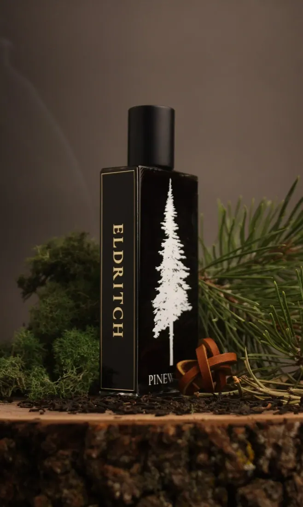
A pretty good iteration of something sinister hiding below the moss of a forest. It truly has that damp and abandoned (or unexpected pine-y smell. It is really nice. Turns aromatic with time
Something this does is that it takes the sharpness away from turpentine and dulls it down, and leaves you with this subtle and unsettling remnant of it. The whole of it is not dense as one would expect the oleoresins to be, but it is a sharp and very narrow fragrance, in the sense that it can be eerie. If it was dense and very all over the place yet smelled the exact same then I don’t think it would achieve what it did. This is not to say that it is devoid of character, but rather the exact character of it feels incomplete in some way, which I think contributes to the eerieness. If I were to complete it I would use some labdanum maybe. Just a thought though.
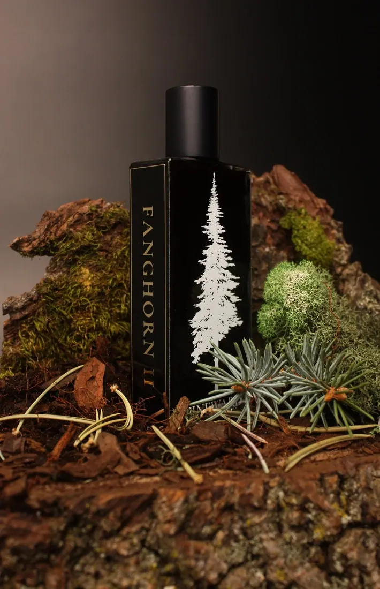
Murkwood’s slightly less dense brother (and either take a point away for realism, or you consider this a different setting than the one depicted by Murkwood).
It is fresher and the incense pops up a bit more. Sometimes it even comes across as a cold incense. It feels like a morning forest, as opposed to Murkwood’s evening/night atmosphere.
Note: Fanghorn (the first version) also existed at some point, but I did not try it
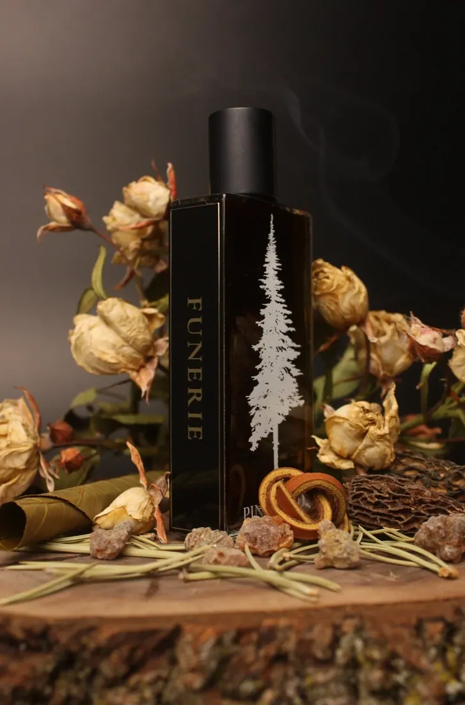
This smells like dead flowers. Smokey and leathery. I do wish that the opening lasted longer though.
This isn’t wet, this isn’t loud, it is slightly sour and floral, like dead flowers.
My past self’s flowers could have taken a page out of Pineward's book istg.
It turns nice and smokey. Great still.
It also maintains that earthiness that comes with the stems of the dead flowers still being attached. I would also consider them as discarded somewhere outside, perhaps thrown into some nameless bush.
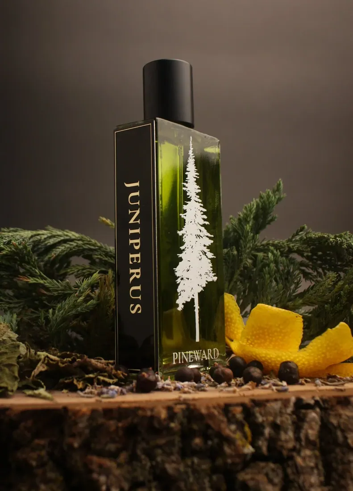
Love this. This is good.
This is fougere, and smells a bit like philosopher’s walk by Les Abstraits. It has lavender (clearly), with juniper. The sweetness of juniper and freshness is 100% there. If you like the smell of juniper (which I know I do), this really is great.
Lovely.
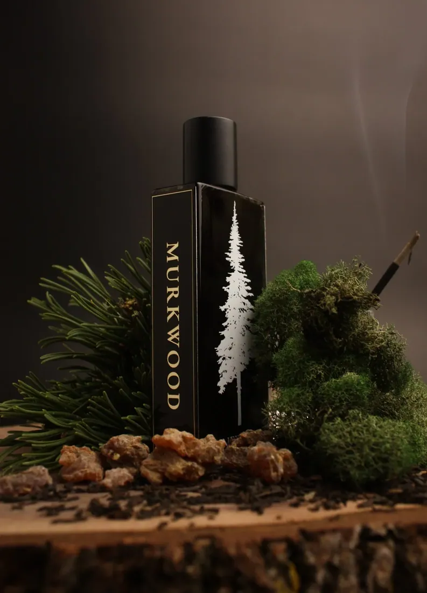
This is my favorite. I own a bottle. It smells exactly how a pine forest looks like. It it is dark, intimidating, green and somehow isolated, smokey, moist and really anything else you picture at the sight of a dense evergreen forest.
Hemlock balsam and fir.
In my opinion the best fragrance depicting a forest when it comes to realism (of the ones I have smelled so far).
Stora Skuggan’s pine captures the needles and an ideal version of it. This one is like the all the watercolours had black seep into them, and taint them.
“if Stora Skuggan’s captures what a pine forest looks like, then Murkwood captures what a forest feels like”.
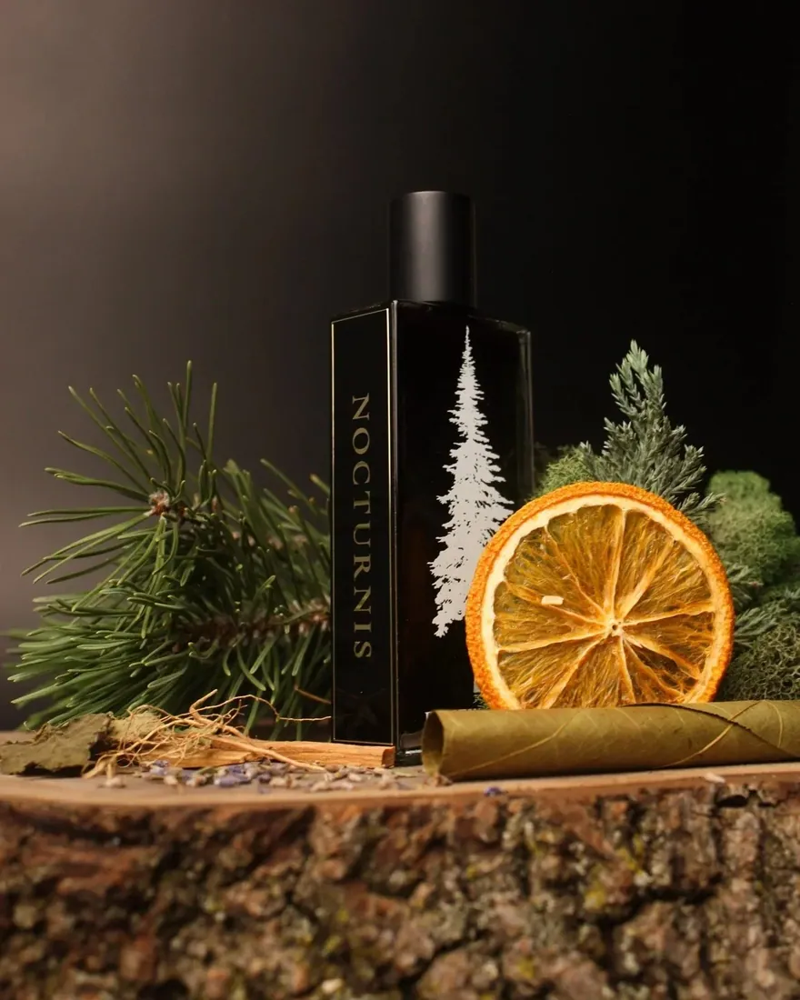
My first impression of this is that it smells old, dusty and almost forgotten; but not in a romantic -ooh - type of wa, rather what I would genuinely expect to smell in an urban exploration. Maybe this excludes the concrete aspect of such an adventure.
I can’t pick up on standout notes. I do think it is herbal, with a touch of smoke? But that could be cypriol or some chamomile. Definitely that fir-Pineward DNA too.
+ pine forest to my prior description
The urban exploration gets greener and greener as the perfume develops. The urban area becomes overgrown :)
ALSO some fougere elements.
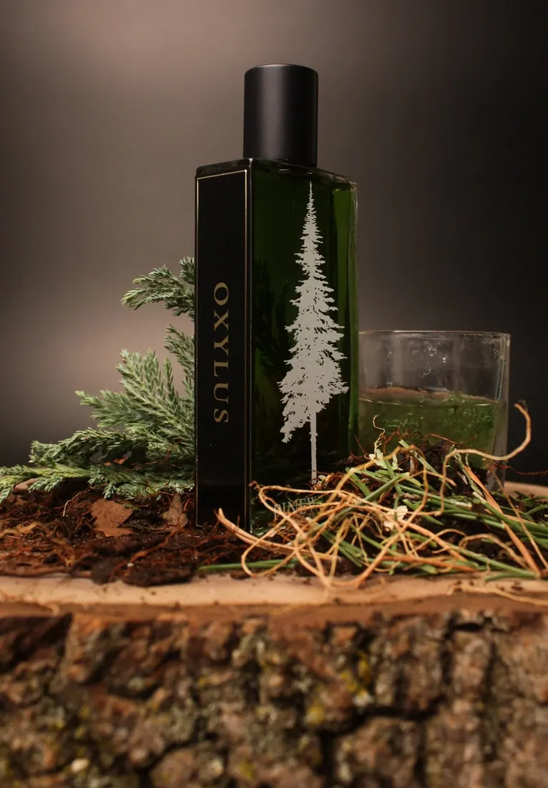
Moist incense, my immediate thoughts are shipwreck. It is soily too. Not earthy but soily. (earthy is a general powderness that is dry with a dark undertone, whereas soiliness or whatever is specifically overturning wet fertile soil in your hands)
Slightly sweet pineyness too
This could be a high altitude forest
Oxylus is the greek god of mountain forests son of the god of the mountains. It suits it ngl
V wet.
Dry down is still wet but there is something gray-green there too, maybe some lichens or whatever the perfume equivalent of those is. That’s what it smells like. Also watered down anchovies.
This is one of those perfumes that uses geosmin wonderfully, and doesn’t contaminate it with a pungent amount of ambrocinide
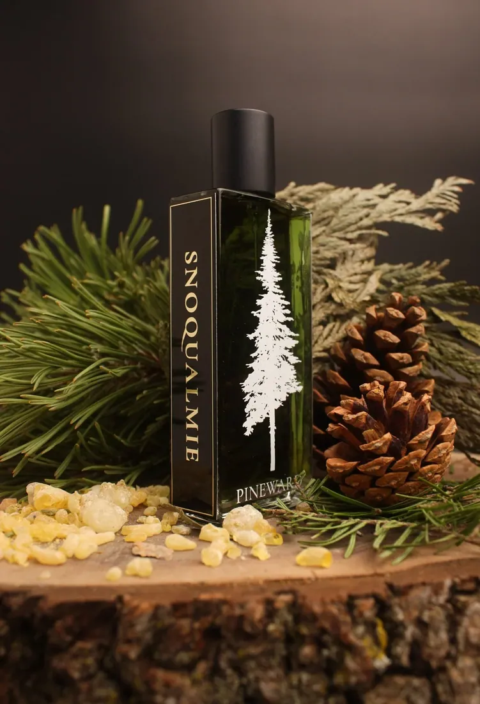
Vines. I feel this smells like vines. It feels old, dark and kind of green heavy. There’s also a wet smoke element to it.
Somewhere it said that it is inspired by an enchanted forest but I don’t see it. Maybe more elven dungeon vibes.
It s also realistic; as in I can see a forest smelling like this. There is 100% water in it (good old geosmin), but too something like orris.
I can also say there are balsams in it.
In a different direction, I can feel like this is what wet incense would smell like. There’s wetness and a compressed smell of incense, where normally you’d find the light and bright parts of something like frankincense separate from the balsamic parts of it, here it is all mushed up together.
This one is very interesting
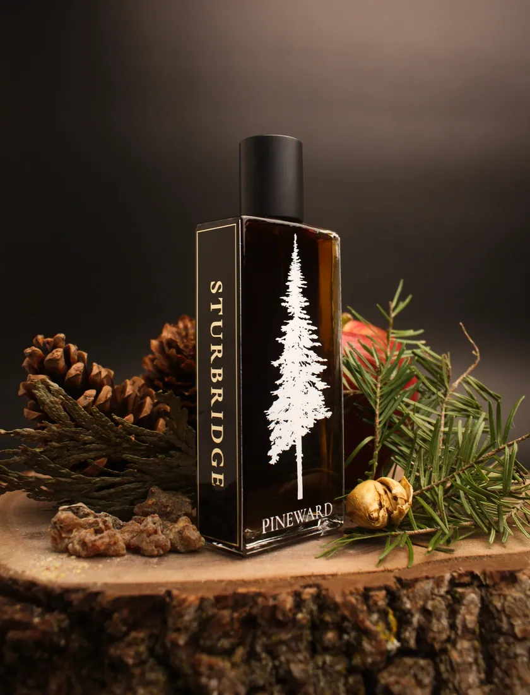
I can’t explain it but if I was a bird I feel I would smell this often.
This is like picking up the scent of anything and everything you find on the side of running water in a pine forest. That is the opening
It can also be interpreted as laundry, but that’s a little more boring.
It starts to turn more licheny. Same as before but as a view from a kitchen window in a cottage somewhere. The wetness and river fade out, and you’re left with a picturesque morning.
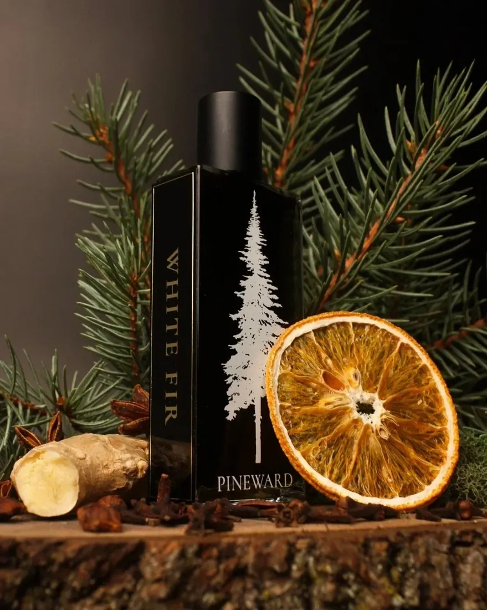
This is a very in-your-face type of fragrance. It smells like pine or spruce jam, but of the pinecones, but rather the pine needles themselves; crushed and made into a sort of sweet turpentine jam.
Ginger and orange maybe
This feels culinary lmao,
Turns more pepperminty, with an orange tang.
I really do feel this is a gourmand take on pine
Dry down is really impressive: one of those things that really captures a pine forest. Maybe spruce, actually. It is earthy, sweet balsamic, and smells like a realistic but gentle forest. If Murkwood is the harsh dark forest, then this is the average counterpart of it.
Still gourmandy, but good.
II
15 – 20
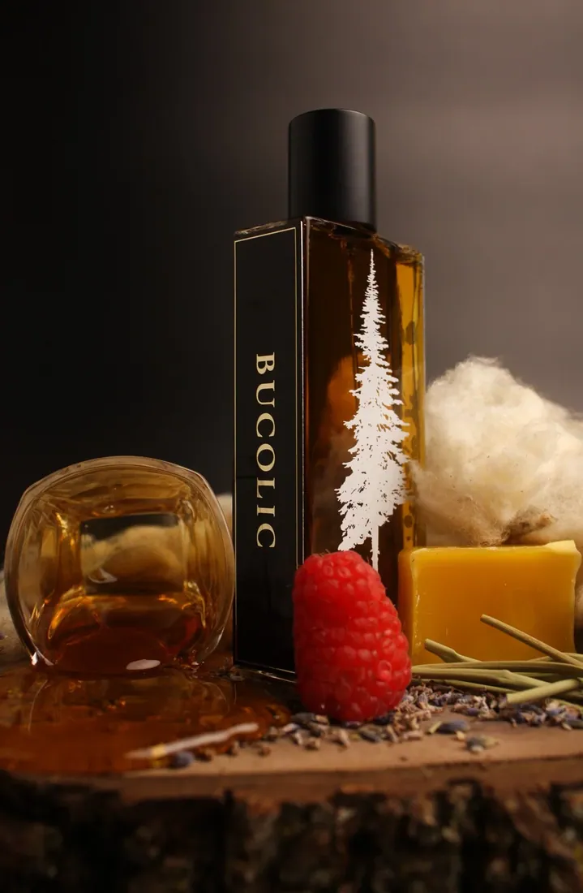
I did expect it to be slightly mineralic and having fir, but no, it is more like a farm. If cottagecore ideation and the act of romanticizing life on a farm tried to be a perfume, then I would happily award it to this one. It is fresh and feels like it conveys that dried hay drenched in eastern rays quite well.
There is honey, but it feels less hay-y. It leans more idealism than realism.
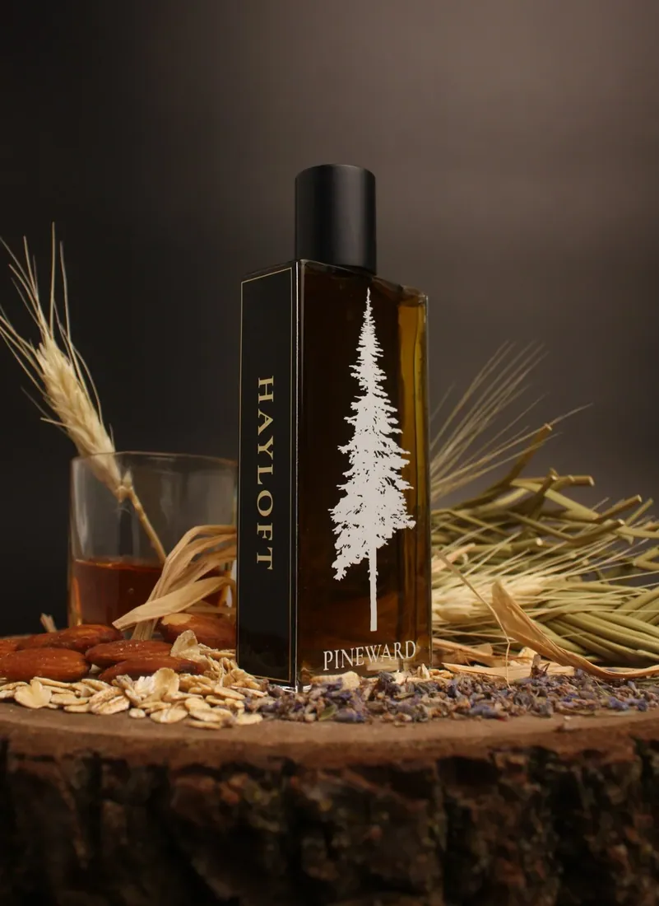
This is one of the nicest and gentlest honeys.
Has hay, hazelnuts and some saffron
Smells like a childhood crush. It is a childish take on a barn. Very idyllic and picturesque.
This is a fragrance where the colours are truly saturated - courtesy of the honey
It can also give cabin in the woods vibe (with all the prior adjectives used to describe the barn)
Good
The dry down is great too. Hay and honey. More hay than honey though (unlike Pastoral). It does still have that grassy hay vibe, but in a great way. The sweet density of honey only peeks through, and so is not overwhelming. The hazelnut note also carried through wonderfully!
Note: Pastoral leans more pine-y and fresh. Hayloft is the settled honey-hay combo.
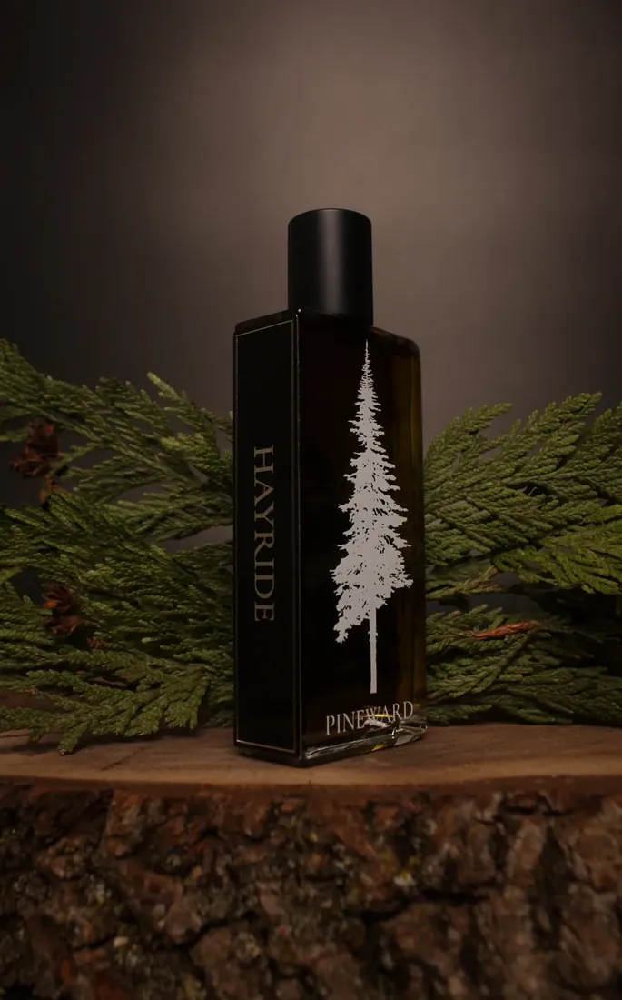
This smells like the overgrowths by the sea, somewhere near a lighthouse in the North. It has that salt and seaweed/barnacle smell. It is cold and I can imagine it smelling like the wet white rocks that you can find near lighthouses. My mind specifically did a beeline to Phare Saint-Mathieu in northwestern France.
This feels like a feminine marine scent; maybe what a little reckless girl playing with the waves might smell like. It is quiet, salty and really quite joyous.
Something I personally like about this fragrance is that there is no Ylang-ylang. I feel if most other houses were to formulate this, they would have added it to smooth the formula out; but with Pineward's formulation you really get that raw smell of the sea that comes with being there. Perhaps my only criticism is that the salt is a little over the top, but I would be nitpicking.
I also feel like this fragrance is also sandy. It is a different interpretation to the one above, but if someone were to ask me for a sandy fragrance recommendation that is true to the sea, I would reach for this one.
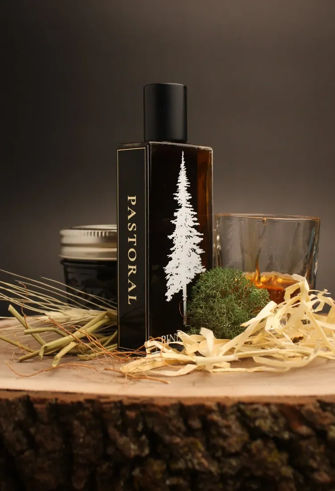
This is lovely,
It smells like homemade very black tea (not red, more like blackberry or current) with honey to sweeten it.
The honey is dissolved clearly.
If you lived in a cottage this is what your best mornings would smell like. There are notes of hay too, maybe jam, some wheat, or bread? Maybe the vibe is the tea, breakfast, and an open window on a chilly summer morning
The hay becomes more prominent later on, which is great. It also feels like it replicates a tobacco accord by accident.
Dry down is almost minty and fresh, with hay and honey. Slightly synthetic but pretty impressive.
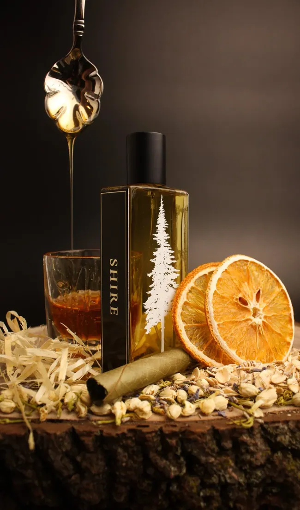
Lovely. I am getting hay and honey again though. I swear this is enough with Pineward. Pastoral and Hayloft are good enough, I think there’s no need for this one. Both are just better.
Less honey, more tobacco. Freshens with tea and some...........fougere elements? Idk
Smells like a barnyard concoction of some fougere or conversely a fougere that is cosplaying as a barn,
Nice though towards the dry down. Gets sweeter and hazelnutty.
Though, wearable.
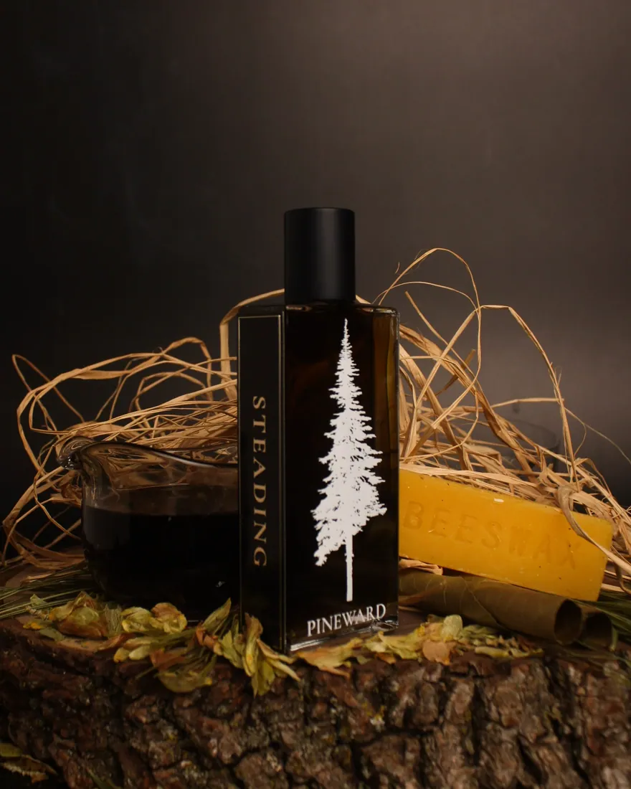
This is STRONG. Very strong.
Tobacco, honey and hay.
Pretty bad though. It feels like if someone drenched hay in honey and then accidentally dropped a years supply of tobacco in there as well. There’s other things in it too but idk what tbh.
Bad
Drydown is bad too.
Not a fan (clearly)
III
21 – 24
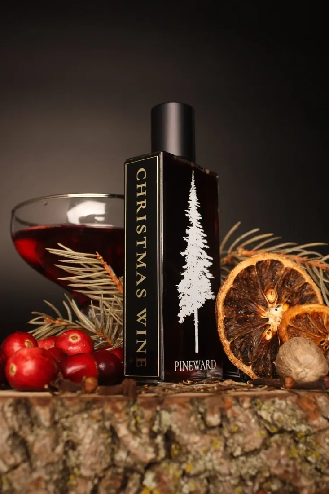
Red wine, with some herbs and fresh spices, with lights and a Christmas tree in the background.
Despite it being very herbal, it does not go medicinal. Its sweet too. My best guess is plum and cloves and something else that is tangy.
Turns water-y, and rainy? Like snow??
Then it turns to incense and spices?
And then it ends up smelling like a gentleman?
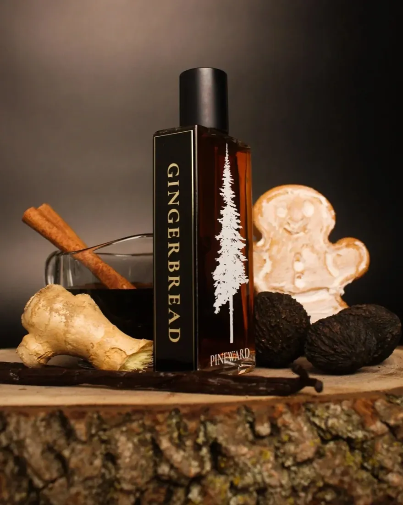
Smells like... Gingerbread. A warm winter candle; a gingerbread house you have built from storebought gingerbread panels w/ your family over a dimly lit kitchen table, with wine and a still hot oven somewhere in the background. It is really cozy and smells like the best attempt at gingerbread a commercial means can get you.
Surprisingly loved it.
Eventually it does smell like a ginger bread coffee
Dry down is synthetic. Not very gingerbready, but like sweet tire tracks. Idt David will put that on his website hehehehehehehehehehe
Has notes of burnt sugar though
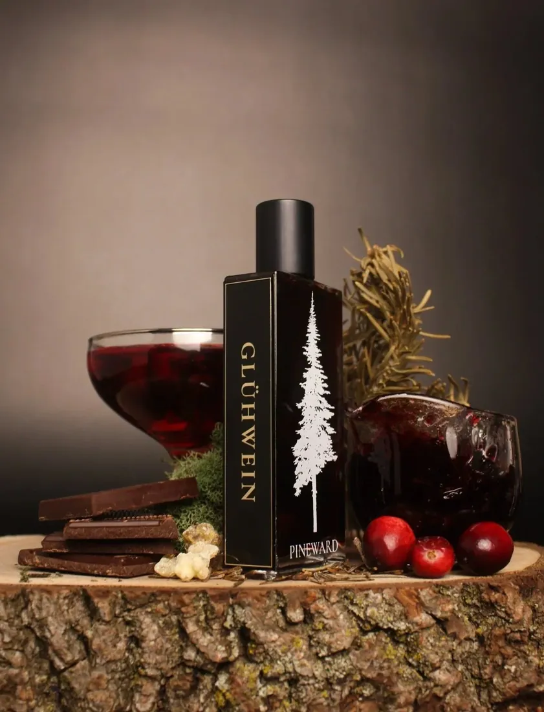
Cranberries and cherries and the warmth of drinking mulled wine. Idt it captures it well though. It feels like a fuck up not gonna lie. It smells like a fruity Christmas.
Maybe more atmospheric where the gluhwein is being drank rather than the actual wine itself.
Leans heavy into cherry
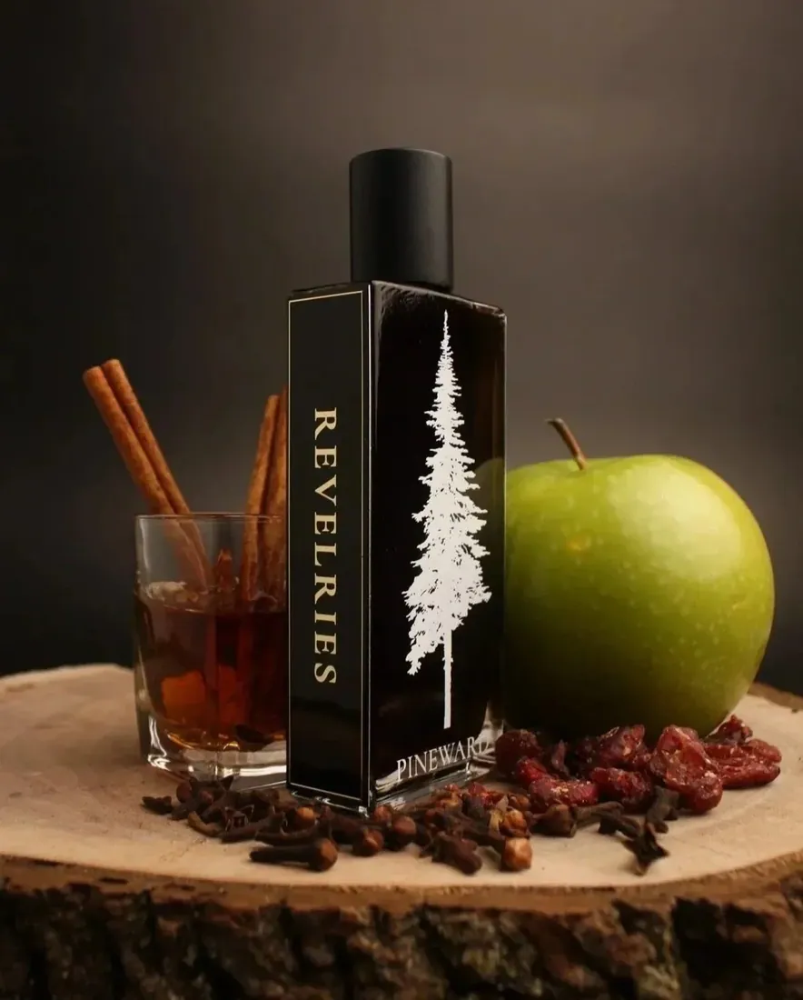
Cinnamon and clove. But it is not like wine, rather it is more like the preparation process of it. I can smell wine in it but this isn’t a wine fragrance, it is something that encompasses the entire festivities. I think the name suits it.
Gets better with time. The spices turn really nice. The opening vibe carries on into the mid and dry down.
IV
25 – 28
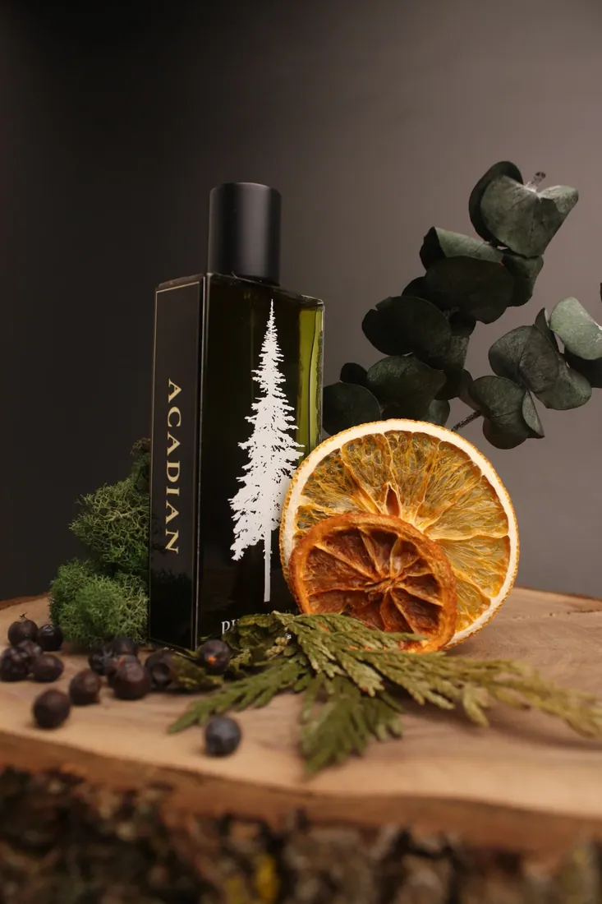
This smells like the overgrowths by the sea, somewhere near a lighthouse in the North. It has that salt and seaweed/barnacle smell. It is cold and I can imagine it smelling like the wet white rocks that you can find near lighthouses. My mind specifically did a beeline to Phare Saint-Mathieu in northwestern France.
This feels like a feminine marine scent; maybe what a little reckless girl playing with the waves might smell like. It is quiet, salty and really quite joyous.
Something I personally like about this fragrance is that there is no Ylang-ylang. I feel if most other houses were to formulate this, they would have added it to smooth the formula out; but with Pineward's formulation you really get that raw smell of the sea that comes with being there. Perhaps my only criticism is that the salt is a little over the top, but I would be nitpicking.
I also feel like this fragrance is also sandy, though that’s about ~35 minutes into spraying it. It is a different interpretation to the one above, but if someone were to ask me for a sandy fragrance recommendation that is true to the sea, I would reach for this one.
Smells like the splash of the sea in the northern hemisphere, somewhere near an old stone lighthouse w/barnacles at the side with the sea.
It is slightly raw, with seaweed and washed ashore wood. Its slightly moist, dense and also fresh piny in some sense.
Saltiness does diminish, but remains there, and combines nicely with earthiness and a seaweed character, but I do think it smells like an old fish.
Considerably linear
This smells like the overgrowths by the sea, somewhere near a lighthouse in the North. It has that salt and seaweed/barnacle smell. It is cold and I can imagine it smelling like the wet white rocks that you can find near lighthouses. My mind specifically did a beeline to Phare Saint-Mathieu in northwestern France.
This feels like a feminine marine scent; maybe what a little reckless girl playing with the waves might smell like. It is quiet, salty and really quite joyous.
Something I personally like about this fragrance is that there is no Ylang-ylang. I feel if most other houses were to formulate this, they would have added it to smooth the formula out; but with Pineward's formulation you really get that raw smell of the sea that comes with being there. Perhaps my only criticism is that the salt is a little over the top, but I would be nitpicking.
I also feel like this fragrance is also sandy. It is a different interpretation to the one above, but if someone were to ask me for a sandy fragrance recommendation that is true to the sea, I would reach for this one.
Similar to Greymist, but very bright on the opening. It is synthetic citrus (almost cleaning product plus that wetness but diluted. Leans into citrus and aromatics
It is slightly powdery.
If you imagine winds sweeping ice debris on a frozen lake, this is what this would smell like. Its is somewhat sharp too.
It goes moist.
New: I also feel there is an element of mine to this. Could be like a wet fir tree, simply.
V
29 – 47
Synthetic green apple. This smells like someone drinking an apple soda on the beach; the ones that had no more than 2% real fruit juice, the ones that you would beg your mom for because it either came in a cool bottle or because it had a neon green colour.
Later it turns into a more shampoo-y green apple. Still very synthetic.
Drydown is vanilla and some vague woods.
From the start, it is very fruity and fresh tobacco. The fruit smells like red apple to me. The vibe of this is the pipe your grandfather would smoke on spring mornings. Pretty nice and approachable in general.
This is a uniquely young tobacco. I can see someone 15 and up wearing this with ease. Despite the latter, I feel that this fades to a more dusty and mature version of itself. It then returns to fruity again. It feels like it oscillates between fruity and tobacco-heavy.
The dry down of it is a nice smooth fruity tobacco.
Caravanserai was a pub or inn that provided people and their caravans with lodging in the Islamic world (mainly); and fair enough honestly: it does smell like the route of a caravan.
It has those balsams and incenses of trade; it has that spruce and fir encountered on their travels; and it has that tea that is being transported, and even hints of herbs (chamomile maybe) that the merchants would be offered on their journey.
Also slightly smokey.
It is also not dense, which I appreciate. A smell like this should be one of those that you would encounter transiently as you pass by a stranger; and it truly does have that light airiness to it.
Saffron and leather and fruity? I don’t like it. Dry down is also pretty unpleasant.
Too little coffee, sweet tobacco and warm spices. Ideal version of tobacco in a coffee shop. Or at least it tries to be Aedes De Venustas is way better in that regard with Cafe Tabac.
Turns fresher, nicer and pretty wow. Cafe Tabac is still better though.
BUT BUT BUT, it does convey the atmosphere of an exclusive gentleman’s club’s smoking lounge at like 5 PM before it is used.
Overall I do like it.
Highkey lovely. Clementine with a backdrop of vetiver and tomato. Maybe juniper or cedar leaves.
Smells super fresh and aromatic, and like a shower gel but a very good one boasting of its use of natural ingredients.
Dry down is super sweet but not cloying. Smells like the juice Zakey (orange flavour), but instead a little less sweet and more tangy and sour. Clementine Zakey juice.
It is also fizzy
Textbook acid rain. I can see the mist. It is watery, resinous, dark and the type of think the peculiar man who refuses to wear an umbrella would smell like. Always wet, probably a lighthouse operator somewhere in a very isolated part northern ireland.
Really good, though it does overdose on the ambrocinide (as many fragrances that try to go in the direction of mist or rain do), though I would argue that that is where the acid rain comes in. It gives he impression of a rock being eroded.
In your face woods and spices.
I love the vision though; truly.
An old wooden mill for flour that is very much a safety hazard left unoperated in the middle of a forest you can almost smell the bird nests inside it. I am a fan.
The spices are harsh and feel like what Dothraki spices would smell like
It makes it smell like the grit before the flour is made in the aforementioned mill
The idea is great, but the execution is unfortunately not.
To recap (new input); I think that it got the dryness and the powderyness that is not sweet but rather closer to dust and porcelain pretty right, but the elements that surround it could have been better. It feels uncharacteristic as it is. It feels like a facet rather than a perfume. Sometimes it does get sweeter though, and I am NOT a fan of that.
Aromatic bright and neutral.
It smells like washed church tiles or the church’s gift shop. Its not “holy” In any way, it is more of a clean musky fragrance
It goes more outside as time goes on. It has that church garden vibe, with yarrow I feel.
I really do feel I smell yarrow and some cold sharp spice that is not lavender.
Shower gel vibes btw’
New take: this is the smell that water would have as it reflects white sunrays on an undulating disturbed surface. It has that smell that aldehydes LOOK LIKE THEY HAVE. Plus some mild greenery.
This is cold wet and fresh. I know ice doesn’t have a smell but the colour of those Icelandic caves would smell like this. You know, the green/blue/turquoise ones.
Maybe it has hinoki or seaweed idk.
Becomes more aquatic but is still bright.
Falls into fougeres I think
This is great.
There are citruses which give it an acridness of wet stone, but in a different way than ambrocinide would. A stone wreck covered in ivy, moss and in the middle of some random forest. This is really good.
I am also picking up on menthol and tea, lovely.
Brilliant acidity. This is really really well done acidity.
This is between a pretty good toilet cleaner (as in it smells good, but probably doesn’t do a great job of cleaning the toilet), and an actual true to the name lime cola.
In the context of the lime cola, it is also sweaty, which is a route seldom taken by fizzy drink perfumes. I think Antonio Alessandria did a great job at doing it with his fragrance. With this, too, I can see it as a beverage being drunk on a bench near the beach under a scorching son. There is a warmth but you get that contrast from the coolness of the soda. Feels fizzy too
Slightly cinnamony on the dry down
This smells like yellow but not a canary yellow, rather a dried hay yellow. I don’t like that it feels a little synthetic. There are synthetic tomato leaves, and an overdose of something soapy, like an orange blossom or something.
When it settles down the harshness decreases, but it smells more like an orange fougere.
Chocolate, peppermint and spices. Slightly boring.
Could have notes of wine, and the more I smell it the more I am leaning towards the fact that it does.
Chocolate is nicely prominent
Dry down is earthy, without cocoa or mint,
Legit, better pornstar by toskovat. Mango, mint, lychee. Very very nice.
Bad. Very bad.
Rotten grapes. Sickly attempt of making some weird gourmand.
Becomes sweet, kinda dried fruit with some aromatic facets.
God the top was awful. I have no clue how it cleared the final stages of production.
This smells like the rug in a cabin. Animal amber vanilla with leather and some powdery stuff. Maybe tea too. Very much animal rug.
OR
A binding of a book. Something that you would find in historic libraries written in latin, but minus the smell of paper. This is an animalic take, more like the idea of the binding rather than the actual binding itself.
The leather is center stage.
A very nice honey, tobacco fragrance. It is not xerjoff naxos-esque honey, but rather something more akin to Cafe Tabac by Aedes De Venustas. It is mature tobacco but sweet, and I know it is honey but it feels like the honey is a part of the tobacco itself, which is a nice think
An underground cigar lounge in a bespoke tailor’s shop somewhere in London, past midnight. That’s the vibe I get,
Ambery, vanillic and has labdanum. It is spicy, maybe clove, and has some element of pine to it too. The latter feels subtle and feels closer to cold incense than pine. Definitely overall sweet.
Mature sweet and not too loud, but pretty boring.
Eventually develops an undertone of incense on the mid, but still remains v warm and vanillic.
Dry down is literally what red velvet curtains look like.
The spice is more identifiable now. It is 100% clove
Projection is quite mid
—
08
These are some pictures I took for the purpose of this page. All rights reserved.
Pictures The photograph standing with each fragrance is Pineward’s own, from pinewardperfume.com. The photographs in the gallery above are mine.
{kind=link}
{kind=link}
{kind=link}
{kind=link}
{kind=link}
{kind=link}
{kind=link}
{kind=link}
{kind=link}
{kind=link}
{kind=link}
{kind=link}
{kind=link}
{kind=link}
{kind=link}
{kind=link}
{kind=link}
{kind=link}
{kind=link}
{kind=link}
{kind=link}
{kind=link}
{kind=link}
{kind=link}
{kind=link}
{kind=link}
{kind=link}
{kind=link}